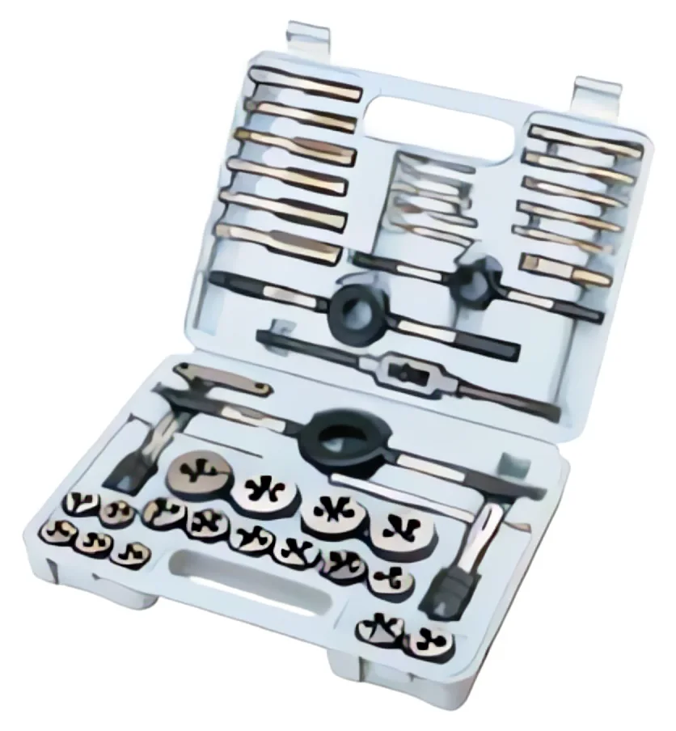

GROZ · Taps, Dies & Holders
Tap & Die Sets
CAT NR TDE/41/I/ST · ORD NR 10015
| CAT NR (catalogue number) | TDE/41/I/ST |
|---|---|
| ORD NR (order number) | 10015 |
| Box quantity | 10 |
| Constituents | T handle Tap Wrench 0 - 1/4" T handle Tap Wrench 1/4" - 1/2" Bar Type Tap Wrench 0 - 1/2" Die Holders for Round Dies of dia. 13/16" Die Holders for Round Dies of dia. 1" Die Holders for Round Dies of dia. 1.1/2" Thread Pitch Gage (18 leaves, #8 to #44) 17 individual Hand Taps & Round Dies in sizes: 4-40 NC, 6-32 NC, 8-32 NC, 10-24 NC, 10-32 NF, 12- 24 NC, 1/8"-27 NPT, 1/4"-20 NC, 1/4"-28 NF, 5/16"-18 NC, 5/16"-24 NF, 3/8"-16 NC, 3/8"-24 NF, 7/16"-14 NC, 7/16"-20 NF, 1/2"-13 NC, 1/2"-20 NF |
| Table section | 41 PCS TAP & DIE SET |
Ask for a quote The catalogue PDF, page 233
“Ask for a quote” opens this product in the catalogue: add it to your quote and send it. Buyers from Africa, the Gulf and worldwide are welcome; prices in USD, EUR or INR.
From the GROZ Workshop Tools CB-05 catalogue. Not yet verified: these details were read from the printed catalogue automatically; check the catalogue page before ordering.